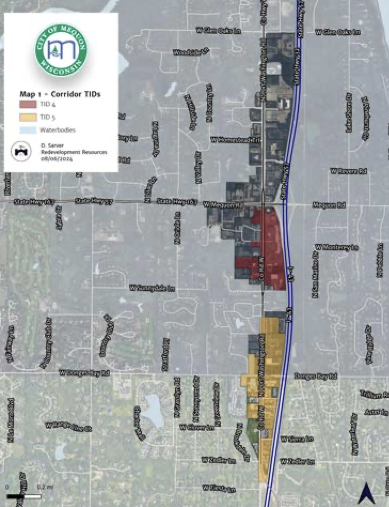
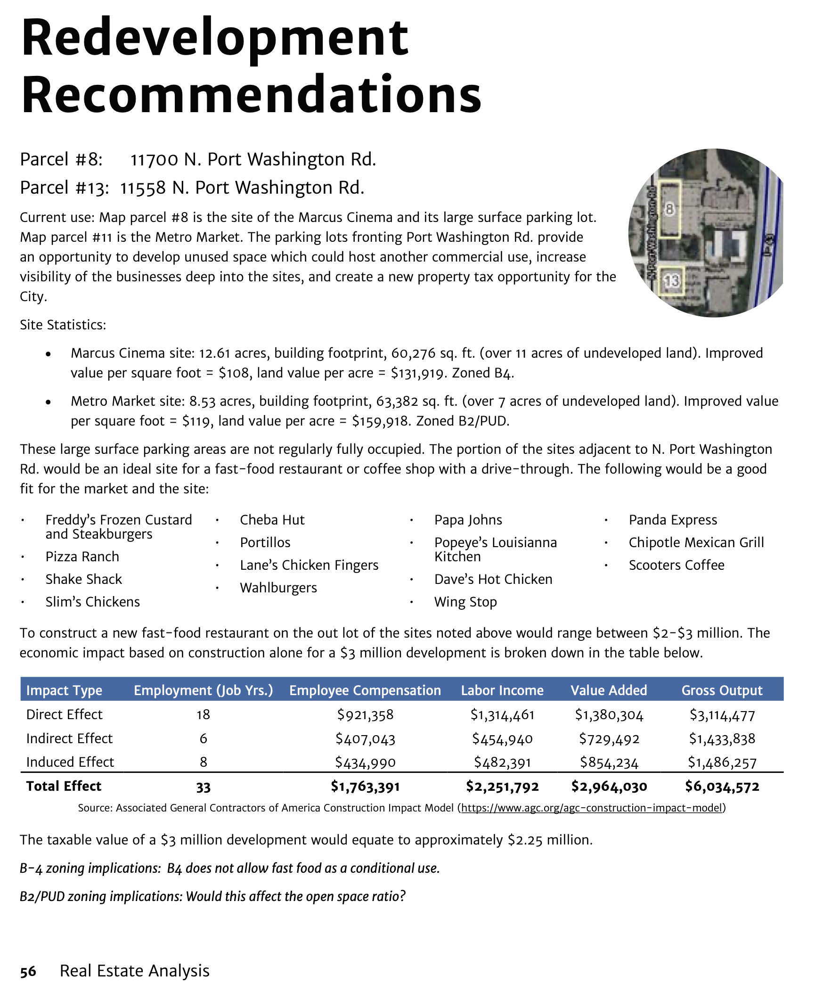
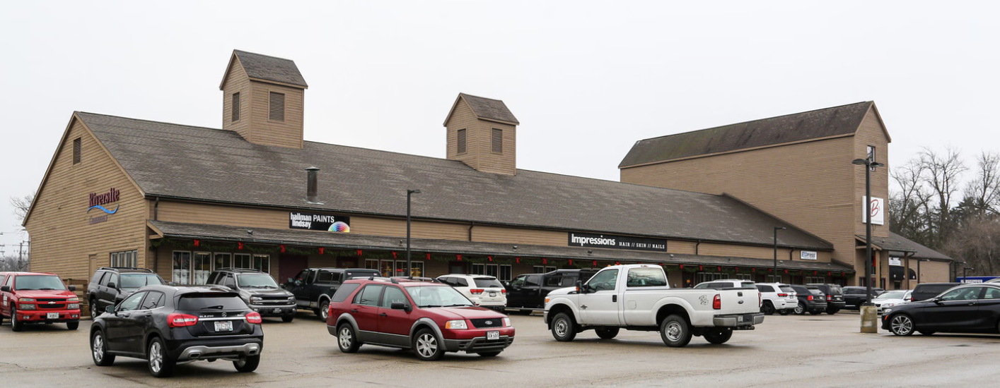
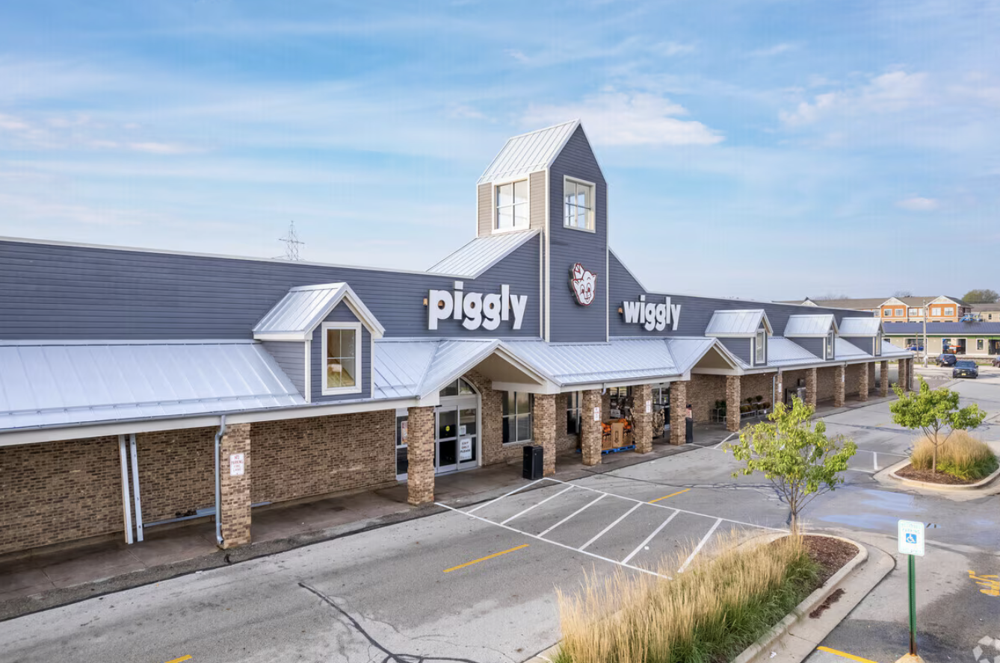

Unlike Thiensville, and to a much greater degree unlike Cedarburg, Mequon had no center, no clear identity.
The 1959 General Plan, Community Development, Mequon, Wisconsin” said... “Throughout history the heart of the city was its municipal center - the area where government, commerce, entertainment and cultural activity was concentrated. Mequon has been fortunate in having somewhat of a municipal center already established, though expansion demands have already begun to fragment it. Such a center would be a distinct asset to the entire community and one which would help establish a firmer community sense.”

Today, there are pods of retail activity along arterial streets but no single area that Mequon could call its center.
The most significant retail area is along Port Washington Road, three miles east of Cedarburg Road.
Growth in that area was nurtured by two TIDs in 2012.
In 2024, the city commissioned a market analysis of the Port Washington Road area by Redevelopment Resources. The analysis suggested additional paths to greater development.
There’s a very small strip mall at Mequon Road and Wauwatosa Road, a mile west of Cedarburg Road.
At the southeast corner of Cedarburg and Mequon Roads is small strip mall.
A larger strip mall is at the southwest corner.
Still, no central identity for the city. No signature destination. Space but not place.